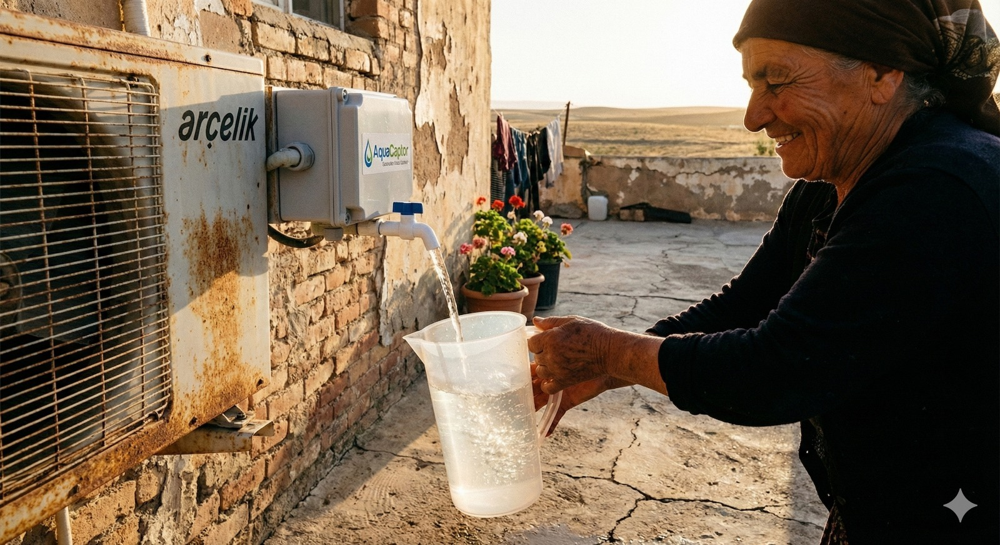
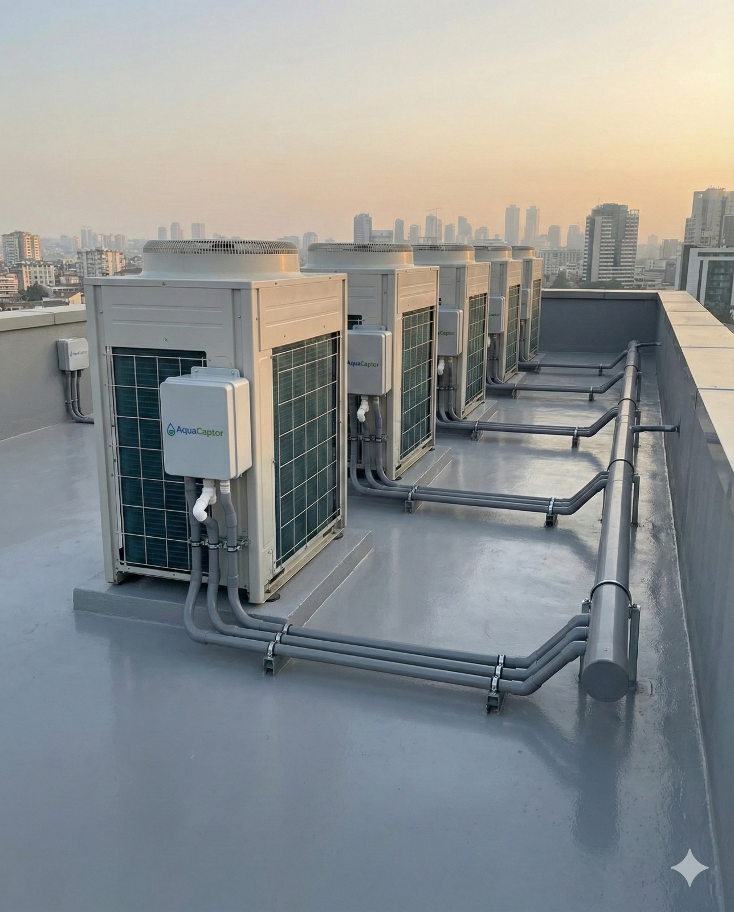
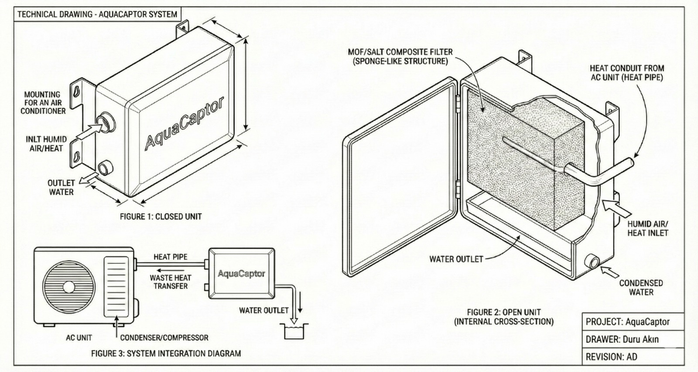
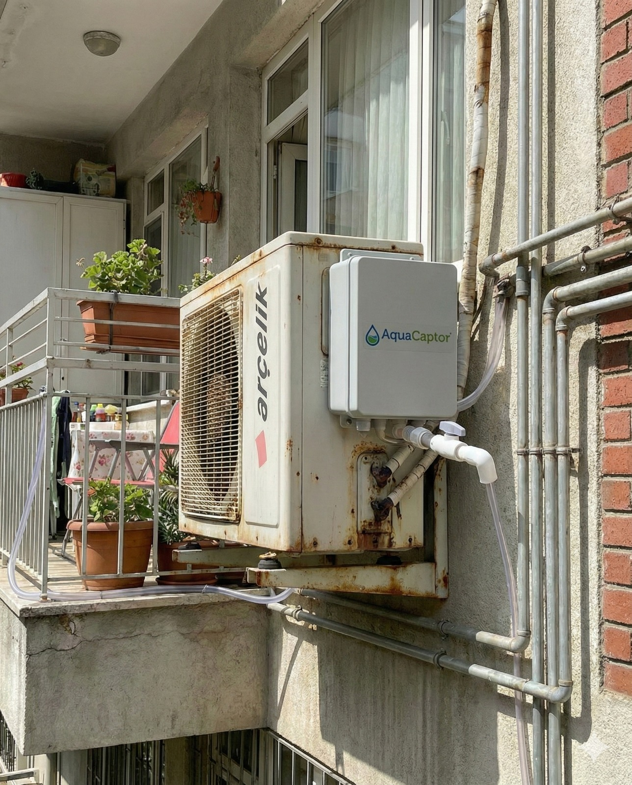
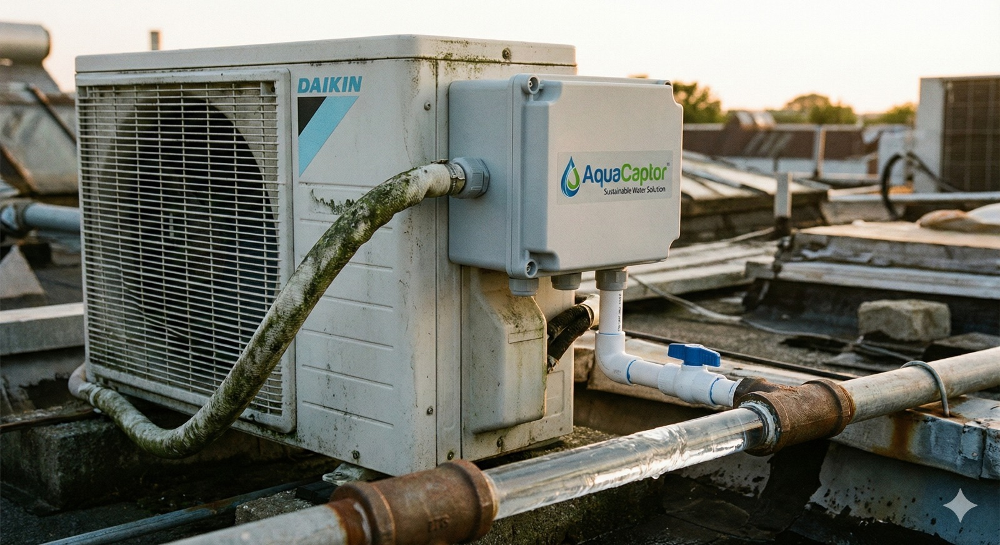

AQUACAPTOR
Vision
AquaCaptor envisions a future in which access to clean water is supported by decentralized, environmentally responsible technologies that operate in harmony with natural resources. By advancing material-driven solutions for atmospheric water harvesting, the company aims to contribute to long-term water security while enabling economically sustainable deployment models.
Mission
Our mission is to research, engineer, and validate atmospheric water harvesting systems based on MOF–salt composite materials, transforming atmospheric humidity into a reliable water resource. Through a strong focus on material performance, system efficiency, and environmental responsibility, AquaCaptor seeks to deliver technically robust and commercially viable solutions for industrial, institutional, and sustainability-driven applications.

Figure 1. Illustration displays a decentralized atmospheric water harvesting prototype integrated with an air-conditioning unit, enabling the collection of water from ambient humidity for local use. The system demonstrates the practical applicability of environmentally sustainable water recovery technologies, particularly for decentralized and resource-limited settings. (Visual content generated with assistance from Gemini.)

Figure 2. Illustration displays a rooftop installation of multiple air-conditioning units integrated with atmospheric water harvesting modules, demonstrating a scalable and decentralized approach to water recovery from ambient air. This configuration highlights the potential for integrating material-based water harvesting systems into existing building infrastructure for environmentally sustainable and commercially viable water production. (Visual content generated with assistance from Gemini.)

Figure 3. Technical drawing of the AquaCaptor atmospheric water harvesting system, illustrating the external unit configuration, internal cross-sectional structure, and system integration with an air-conditioning unit. The schematic highlights the role of the MOF–salt composite filter, heat transfer pathway, and water collection mechanism, demonstrating the functional design principles of the prototype. (Visual content generated with assistance from Gemini.)

Figure 4. Installation of an atmospheric water harvesting module integrated with a residential air-conditioning unit. The setup demonstrates the practical integration of material-based water recovery technology into existing building infrastructure, enabling decentralized and environmentally sustainable water production. (Visual content generated with assistance from Gemini.)
